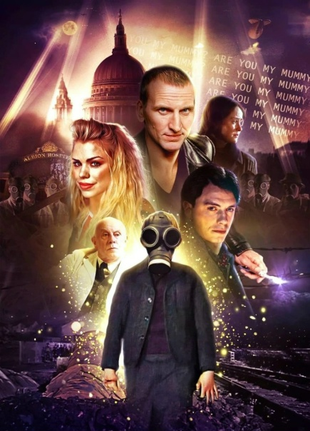

Эра Девятого Доктора (1 сезон)
<<< НАЗАД ||| 9. Пустой ребёнок ||| ДАЛЬШЕ >>>
+ Original [ENG]
Субтитры: Русские {TrueTransLate} + Английские
 | Весь 1-й сезон (13 серий) |
The Empty Child
Дата выхода: 21 мая 2005
Формат: 45-минутный эпизод
| Варианты озвучек: | * Разные: смотрите по инструкции |
|---|---|
| Скачивание и просмотр: |
В погоне за металлическим объектом через временную воронку, Доктор и Роза прибывают в Лондон во время Блица. Там они находят бездомных детей, ходячие трупы с необъяснимыми симптомами, странный цилиндр охраняемый армией и лихого капитана Джека Харкнесса.


Трейлер: